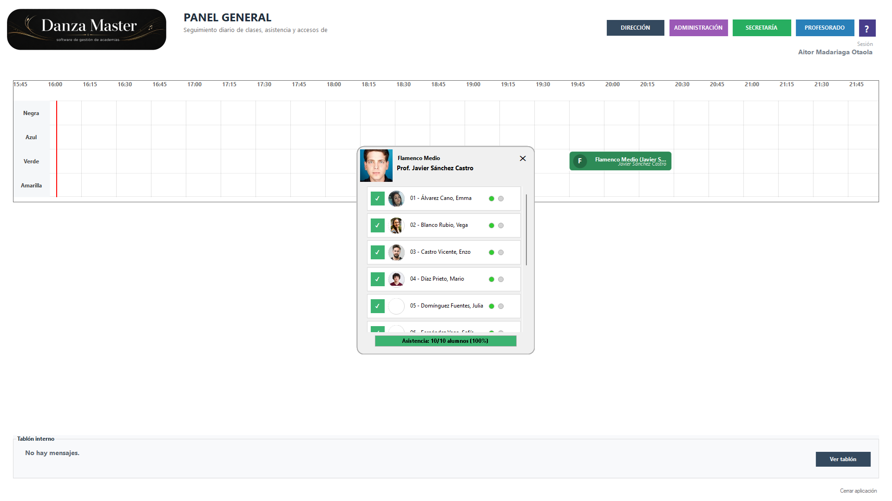
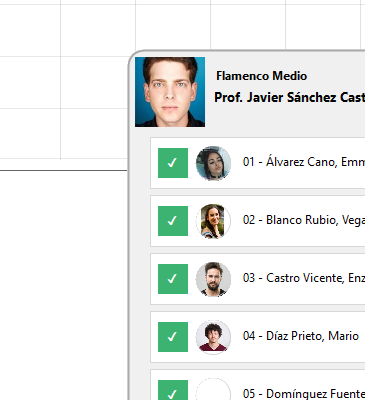

Alumnos
Fichas de alumnos, tutores, autorizados, documentos y fotografías.
Programa de gestión
Danza Master ayuda a centralizar, organizar y agilizar el trabajo diario de una academia de danza. Su objetivo es hacer más clara, cómoda y ordenada la gestión del centro, facilitando el seguimiento cotidiano y apoyando la organización general de clases, alumnado, profesorado y demás tareas habituales.
Danza Master es un software de gestión creado para facilitar el trabajo diario de una academia de danza. Esta web sirve como presentación del programa, como punto de información general y también como base para ir incorporando poco a poco ayuda, documentación y capturas más completas.
Aquí se puede ir mostrando el funcionamiento real de Danza Master con capturas actualizadas del programa. De momento he colocado una composición en forma de hojas superpuestas para que la galería ya tenga presencia visual.


Esta captura muestra el panel general con la parrilla horaria, la clase activa y el control de asistencia del alumnado.
Cuando quieras, aquí se pueden ir añadiendo más pantallas: alumnos, economía, clases, profesorado o configuración.
Fichas de alumnos, tutores, autorizados, documentos y fotografías.
Organización de clases, packs, horarios, aulas, profesores y grupos activos.
Conceptos, cobros, recibos, facturas, descuentos y documentos emitidos.
Gestión de docentes, disciplinas, paneles y condiciones profesionales.
Control de fichajes, incidencias y registros de asistencia.
Protección de datos mediante copias manuales y automáticas.
La web también queda preparada para crecer como zona de ayuda: manuales, preguntas frecuentes, capturas, tutoriales o notas de versiones.
Ir a la ayuda